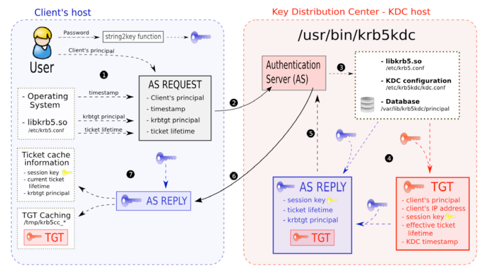

Mars的笔记

Spark Hadoop Kerberos
Kerberos


Hadoop

HDFS Delegation Token
TokenID = {ownerID, renewerID, issueDate, maxDate, sequenceNumber}
TokenAuthenticator = HMAC-SHA1(masterKey, TokenID)
Delegation Token = {TokenID, TokenAuthenticator}dfs.namenode.delegation.token.max-lifetime = 7days
dfs.namenode.delegation.key.update-interval = 1day
dfs.namenode.delegation.token.renew-interval = 1dayBlock Access Token
TokenID = {expirationDate, keyID, ownerID, blockID, accessModes}
TokenAuthenticator = HMAC-SHA1(key, TokenID)
Block Access Token = {TokenID, TokenAuthenticator}Spark


Allow Long Running Spark Apps
- Spark-1.4.0: Spark-5342 Allow long running Spark apps to run on secure YARN/HDFS
- Spark-1.4.0: SPARK-6918 Secure HBase with Kerberos does not work over YARN
- Spark-1.5.0: Spark-8688 Hadoop Configuration has to disable client cache when writing or reading delegation tokens
- Spark-1.5.0: Spark-7524 add configs for keytab and principal, move originals to internal
Patch
- Spark-11182 HDFS Delegation Token will be expired when calling "UserGroupInformation.getCurrentUser.addCredentials" in HA mode
- HDFS-9276 Failed to Update HDFS Delegation Token for long running application in HA mode